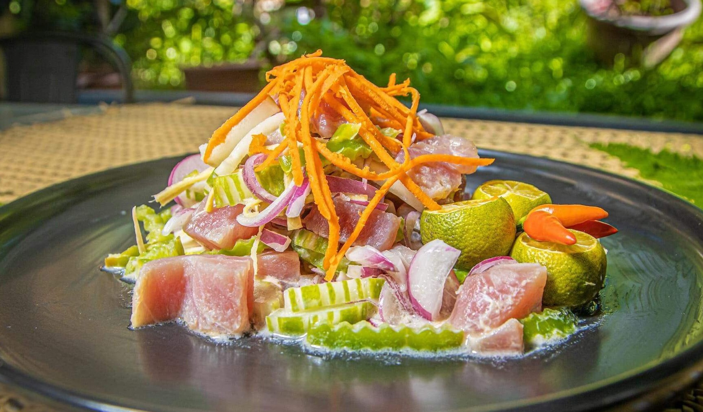

Explore Camiguin

A stunning sandbar with panoramic sea and mountain views. Perfect for photography and sunset watching.

Majestic waterfall with cool, refreshing water. Great for swimming and nature walks.

An active volcano offering a moderate hike with breathtaking views of the island and sea.
A hauntingly beautiful site where crosses emerge from the sea, remnants of a 19th-century volcanic eruption. Best visited at sunrise or sunset, it offers serene boat rides, photography, and a glimpse into Camiguin’s history..
White sandy beaches with clear water and vibrant marine life. The island is ideal for relaxation and short trekking.
A unique natural spring in Catarman, Camiguin, where you can dip in cool, mineral-rich waters surrounded by lush greenery. Perfect for swimming, picnics, and a relaxing day close to nature.
A tranquil mangrove sanctuary with wooden boardwalks and huts over clear coastal waters — perfect for nature walks and gentle swimming
A quiet coastal spot with calm waters, perfect for a relaxed swim and scenic sunset views.
Remains of a historic church destroyed by volcanic eruption, surrounded by scenic views.
Discover woven mats, baskets, and coconut-based crafts while learning about Camiguin’s traditional artistry.

Remains of a historic church destroyed by volcanic eruption, surrounded by scenic views.
a preserved ancestral home in Mambajao, honored as an Important Cultural Property. Walk through its historic halls and feel the legacy of old‑time Camiguin, an intimate glimpse of the island’s past amid quiet, timeless surroundings.
Sweet soft pastries filled with custard or yema. A must-try local delicacy.
Where: Pastry Shops around Mambajao

Sweet and juicy fruit celebrated in the annual festival; try fresh or in jams and preserves.”
Where: Local fruit stalls in Sagay (especially during October’s Lanzones Festival)
Grilled fish, shrimp, lobster, and kinilaw made from the day’s fresh catch..
Where: Guinsiliban Seafood Grill, Catarman beachside restaurants
Brewed from locally grown beans — perfect for coffee enthusiasts.
Where: Coffee shops around Mambajao town